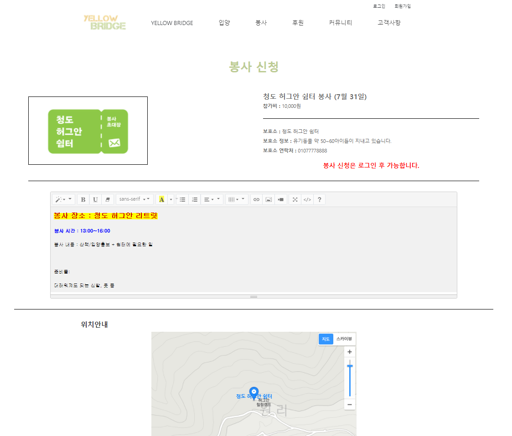
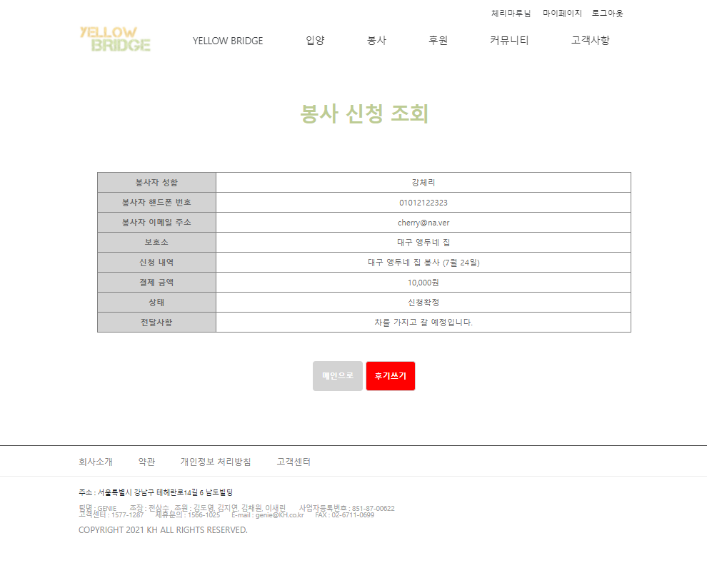
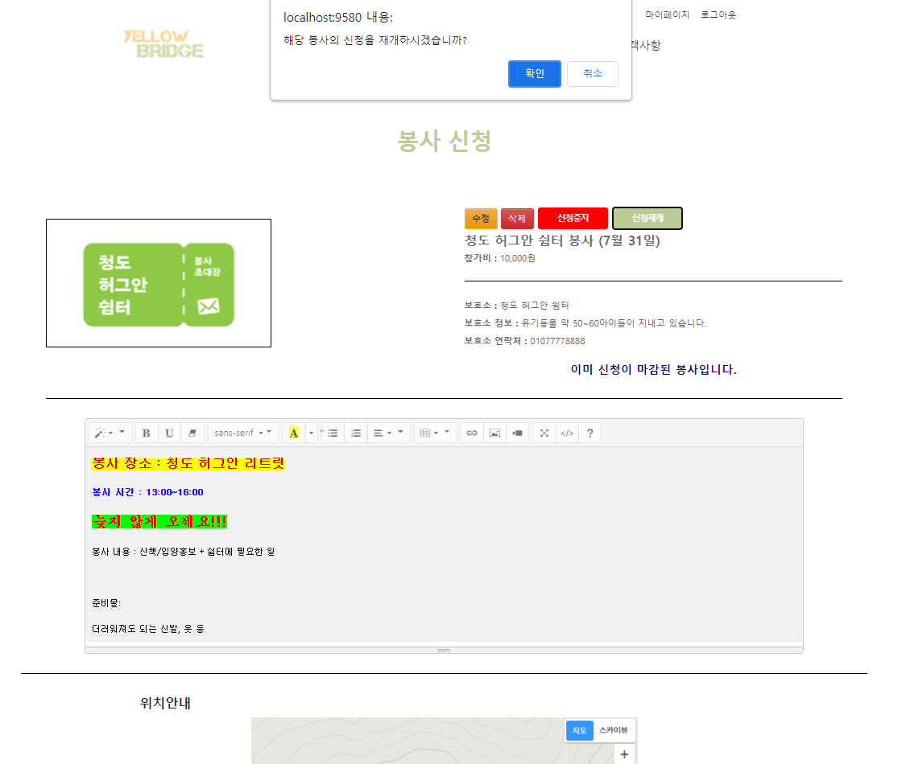

봉사 공고
봉사공고 목록
한 페이지 당 6개의 공고, 페이징 처리 기능 구현
검색 기능을 통해 원하는 공고를 직접 검색 가능하다.
사용자는 공고 작성이 불가하고 관리자만 작성이 가능하다.
봉사공고 검색
분류를 제목 / 보호소 중 선택하고 검색을 하면 원하는 값이 나온다.
해당 화면은 제목이 '대구'인 공고를 검색한 결과이다.
봉사공고 상세보기

비로그인 상태 시 로그인 후 봉사 신청이 가능하다는 안내 문구가 뜬다.
로그인 상태 시 봉사신청 버튼이 활성화된 것을 볼 수 있다.
에디터: 썸머노트 API
위치안내: 카카오 지도 API로 구현, 글자 클릭 시 해당 지도 이동
카카오 지도 API
위치안내에서 지도의 글씨를 클릭하면 카카오 지도로 이동한다.
봉사 신청서 작성
로그인이 되어있을 시에만 신청 가능, 신청서 작성 페이지로 이동할 때 회원정보가 자동으로 기입되도록 설정하였다.
신청하기 버튼을 누르면 알림창이 뜨고 확인을 누르면 신청완료 페이지로 이동한다.
봉사 신청 완료
자신이 신청할 때 입력했던 정보가 뜬다.
봉사 신청 조회
봉사 신청 조회 목록
자신의 신청 목록만 볼 수 있다.
페이징 처리 기능을 구현하였다.
봉사 신청 조회 상세보기

봉사 신청서에서 작성한 내용 + 자신의 개인정보가 담겨 있다.
상태가 입금대기일 경우, '후기쓰기' 버튼이 보이지 않는다.
상태가 신청확정일 경우, '후기쓰기' 버튼이 활성화 되었다.
봉사 후기 작성
에디터: 썸머노트 API
첨부파일을 첨부할 수 있다.
봉사 신청 조회 - 후기를 쓴 경우
후기를 쓴 경우 후기쓰기 버튼이 사라지고 상태가 후기 작성 완료로 변경된다.
하단에 후기를 작성했다는 안내 문구가 뜬다.
봉사후기 게시판
봉사후기 게시판 목록

페이징 기능을 구현하였다.
검색 기능을 통해 원하는 게시글을 검색할 수 있다. (제목/카테고리/작성자)
봉사후기 상세보기
자신이 쓴 게시물에만 수정, 삭제 버튼이 활성화된다.
자신이 쓴 글이 아닐 경우, 수정 삭제 버튼이 비활성화된다.
댓글 기능을 구현하였다.
봉사후기 수정
첨부파일 삭제 기능 구현, 기존 첨부파일을 삭제하고 새로운 첨부파일을 첨부할 수 있다.
에디터: 썸머노트 API
봉사후기 상세보기 - 비로그인 시

로그인을 안 했을 경우 댓글 작성 창이 비활성화된다.
비로그인 시에는 자신의 게시글이라 하더라도 수정, 삭제 버튼이 보이지 않는다.
게시판 댓글 작성
댓글을 작성하고 작성 버튼을 누르면 댓글이 등록된다.
게시판 댓글 보기
자신이 작성한 댓글에만 수정 버튼이 활성화된다.
게시판 댓글 수정
수정 버튼을 누르면 댓글 작성 란에 작성한 댓글이 뜬다. 댓글을 수정하고 수정버튼을 누르면 수정이 완료된다.
게시판 댓글 삭제
자신의 댓글에만 삭제 버튼이 활성화된다.
삭제 버튼을 누르면 댓글이 삭제된다.
게시판 글 삭제
우측 상단의 삭제 버튼을 누르면 삭제하시겠습니까? 라는 알림창이 뜨고 확인을 누르면 글이 삭제된다.
게시글 목록에서도 글이 삭제된 것을 볼 수 있다.
게시판 검색 기능
글쓴이의 닉네임에 '새우탕'이 들어간 글을 검색한 결과이다.
관리자 - 봉사 공고 관리
봉사 공고 관리 목록
관리자는 사용자와는 달리 공고를 작성할 수 있다. 우측 상단에 글쓰기 버튼이 있는 것을 확인할 수 있다.
페이징 기능을 구현하였다.
검색 기능을 통해 원하는 공고를 검색할 수 있다.
봉사 공고 관리 검색기능
제목에 '청도'가 들어가는 봉사를 검색한 결과이다.
봉사 공고 관리 상세보기
사용자와는 달리 수정, 삭제, 신청중지, 신청재개 버튼이 활성화된 것을 볼 수 있다.
다른 것들은 사용자 버전과 동일하다(내용: 썸머노트 API사용, 위치안내: 카카오지도 API사용)
봉사 공고 작성

에디터: 썸머노트 API
카테고리를 선택하지 않고 등록버튼을 누르면 카테고리를 선택해달라는 알림창이 뜨고 확인을 누르면 카테고리 선택란으로 이동한다.
카테고리 선택까지 모든 항목을 다 채운 모습이다. 등록 버튼을 누르면 공고가 등록된다.
새로 작성한 공고가 올라와 있는 것을 볼 수 있다.
봉사 공고 수정
에디터: 썸머노트 API
공고의 내용을 수정하고 수정버튼을 누르면 내용이 수정된다.
카테고리를 선택하지 않고 작성 버튼을 누른 경우 카테고리를 선택해달라는 알림창이 뜨고 카테고리 선택 칸으로 이동한다.
내용이 수정된 것을 확인할 수 있다.
봉사 신청 중지

신청중지 버튼을 누르면 봉사신청이 중지된다.
신청이 마감된 봉사라는 글귀로 바뀐 것을 볼 수 있다.
사용자 버전에서도 봉사신청버튼이 사라지고 신청이 마감됐다는 문구가 뜬다.
봉사 신청 재개


신청재개 버튼을 누르면 신청을 재개하겠냐는 알림창이 뜨고 확인을 누르면 신청이 재개된다.
봉사신청이 가능하다는 문구로 바뀐 것을 볼 수 있다.
사용자 버전에서도 봉사신청 버튼이 활성화된 것을 볼 수 있다.
봉사 공고 삭제
삭제 버튼을 누르면 삭제하겠냐는 알림창이 뜨고 확인을 누르면 공고가 삭제된다.
목록에서 공고가 사라진 것을 볼 수 있다.
사용자 버전에서도 삭제한 공고가 없어진 것을 볼 수 있다.